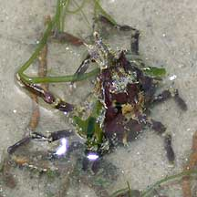

|
|
| crabs text index | photo index |
| Phylum Arthropoda > Subphylum Crustacea > Class Malacostraca > Order Decapoda > Brachyurans > Superfamily Majaoidea |
| Arrow-head
spider crab Menatheius sp.* Family Epialtidae updated Dec 2019 Where seen? This tiny crab is sometimes seen on some of our shores, among seagrasses and seaweeds. It is probably quite common but overlooked because it is so well camouflaged. Features: Body width 0.5-1cm. Body rather flat and quite triangular with a sharp pointed tip between the eyes. Walking legs and pincers long. May be brown or green. Slow moving. According to the Singapore Red Data Book, the One-horned spider crab (Menaethius monoceros) is found among seaweeds such as Sargassum, and among seagrasses on rocky or sandy/muddy shores. It also covers itself with debris to blend into the surroundings. |
 Labrador, Jun 05 |
 Chek Jawa, Jan 02 |
*Species are difficult to positively identify without close examination.
On this website, they are grouped by external features for convenience of display.
| Arrow-head spider crabs on Singapore shores |
On wildsingapore
flickr
|
| Other sightings on Singapore shores |
References
|